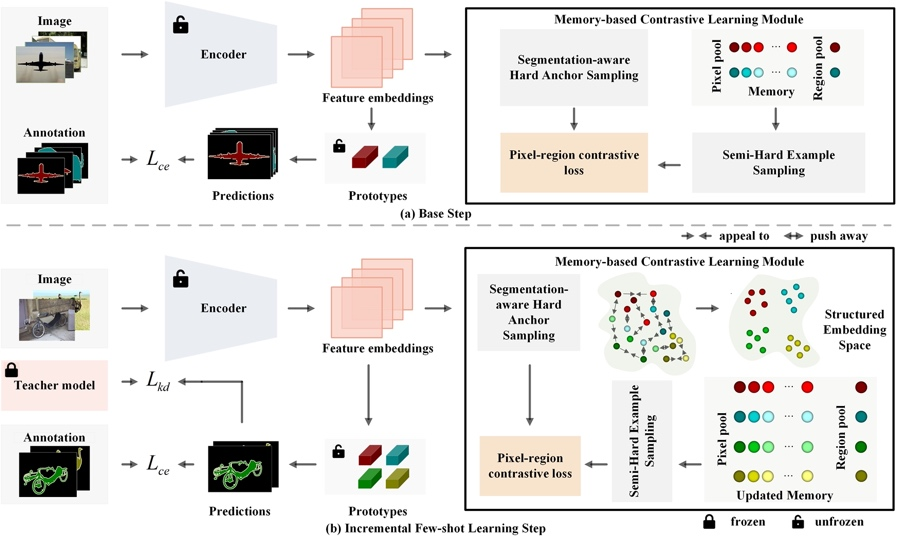
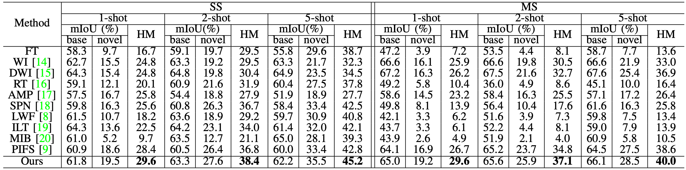
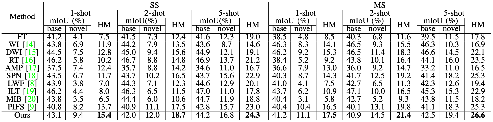
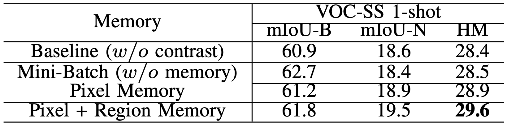
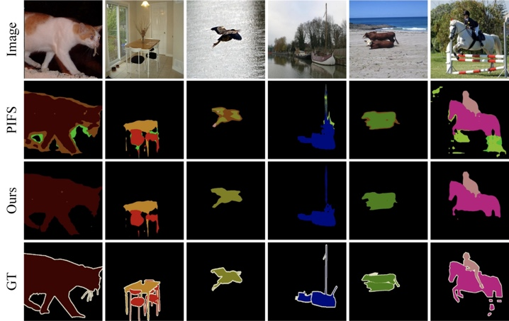
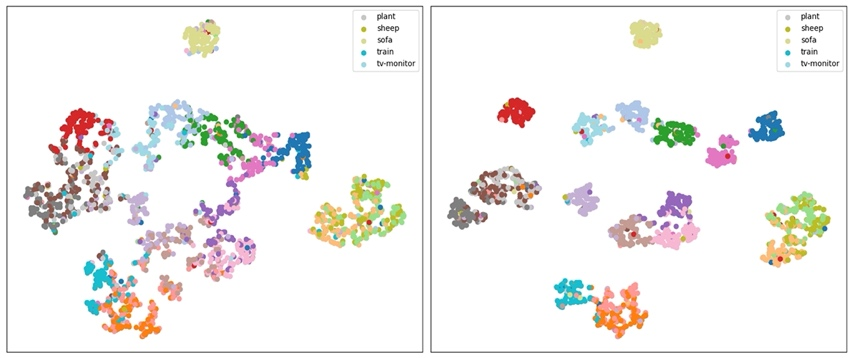

Memory-Based Contrastive Learning with Optimized Sampling for
Incremental Few-Shot Semantic Segmentation
Yuxuan Zhang, Miaojing Shi, Taiyi Su, and Hanli Wang
Overview:
Incremental few-shot semantic segmentation (IFSS) aims to incrementally expand a semantic segmentation model's ability to identify new classes based on few samples. However, it grapples with the dual challenges of catastrophic forgetting (due to feature drift in old classes) and overfitting (triggered by inadequate samples in new classes). To address these issues, a novel approach is proposed to integrate pixel-wise and region-wise contrastive learning, complemented by an optimized example and anchor sampling strategy. The proposed method incorporates a region memory and pixel memory designed to explore the high-dimensional embedding space more effectively. The memory, retaining the feature embeddings of known classes, facilitates the calibration and alignment of seen class features during the learning process of new classes. To further mitigate overfitting, the proposed approach implements an optimized example and anchor sampling strategy. Extensive experiments show the competitive performance of the proposed method.
Method:
The pipeline of the proposed method for IFSS is shown in Fig. 1. Dynamic memory aims to preserve features at two levels of granularity, reducing the model's tendency to forget base classes. Optimized sampling focuses on selecting valuable anchors and positive/negative samples. Combined with pixel-region contrastive learning of old class embeddings, it aids in calibrating and aligning old and new class features during the learning of new classes.

Fig. 1. Overall schematics of the proposed incremental few-shot segmentation method.
Result:
We compare our method with the state-of-the-art IFSS methods. The comparison results are shown in Tables 1-2. The remarkable performances on the datasets demonstrate the superiority of our method. We conduct extensive ablation experiments to verify the design of dynamic memory and different sampling strategies on the proposed method, and the experimental results are given in Table 3.
Table 1. Comparison with state-of-the-art methods on the PASCAL VOC 2012 datasets.

Table 2. Comparison with state-of-the-art methods on the COCO dataset.

Table 3. Ablation study on VOC to compare different memory designs.

Figure 2 shows the qualitative comparisons between our method and PIFS. As the figure shows, our method provides more precise segmentation masks than PIFS.

Fig. 2. The qualitative comparison between PIFS and ours.
As shown in Fig. 3, the learned pixel embeddings by our method become more compact and well separated, suggesting that our method shapes a well-structured semantic feature space by employing pixel-region contrastive learning.

Fig. 3. T-SNE visualization of features learned with (left) PIFS and (right) our method.
Source Code:
原站插图：图片暂留白MCLOS1.0.zip
Citation:
Please cite the following paper if you find this work useful:
Yuxuan Zhang, Miaojing Shi, Taiyi Su, and Hanli Wang, Memory-Based Contrastive Learning with Optimized Sampling for Incremental Few-Shot Semantic Segmentation (ISCAS'24), Singapore, accepted, May 19-22, 2024.